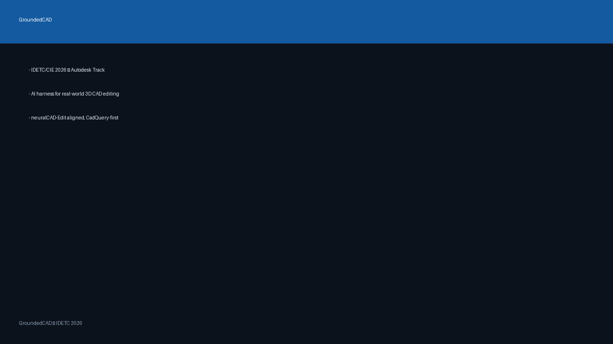
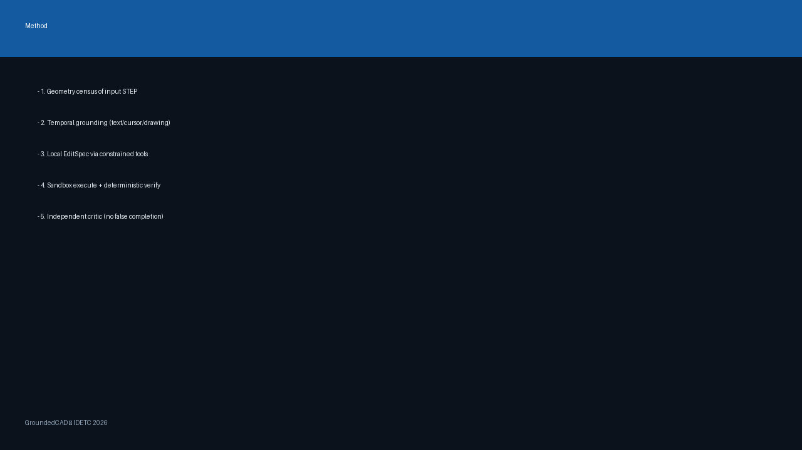
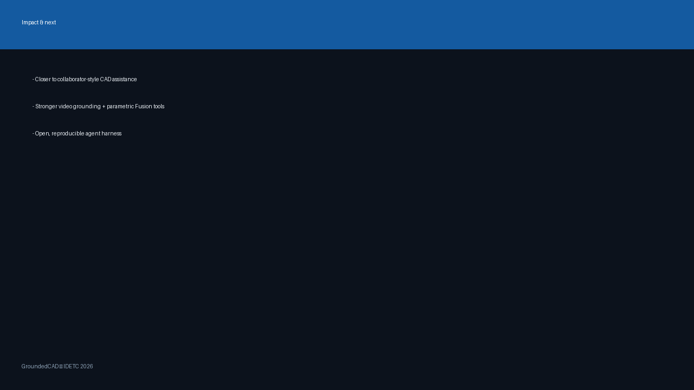

GroundedCAD
- IDETC/CIE 2026 — Autodesk Track
- AI harness for real-world 3D CAD editing
- neuralCAD-Edit aligned, CadQuery-first

Problem
- Editing >> generation in engineering practice
- Frontier VLMs lag human CAD experts
- Harness design (tools/inspection/iteration) is decisive
Method
- 1. Geometry census of input STEP
- 2. Temporal grounding (text/cursor/drawing)
- 3. Local EditSpec via constrained tools
- 4. Sandbox execute + deterministic verify
- 5. Independent critic (no false completion)

Vs baseline harness
- Baseline: free CadQuery rewrite + self-declare done
- Ours: grounded targets + typed plan + gates
- Best-valid retention under iteration budget
- Benchmark-compatible STEP/STL/settings.json
Results & examples
- Synthetic suite: fillet, hole, duplicate, translate, chamfer
- Ablations in outputs/ablations/ablation_report.json
- Next: full text-48 neuralCAD-Edit auto metrics
- Attach 5 iso views for qualitative slide
Impact & next
- Closer to collaborator-style CAD assistance
- Stronger video grounding + parametric Fusion tools
- Open, reproducible agent harness
